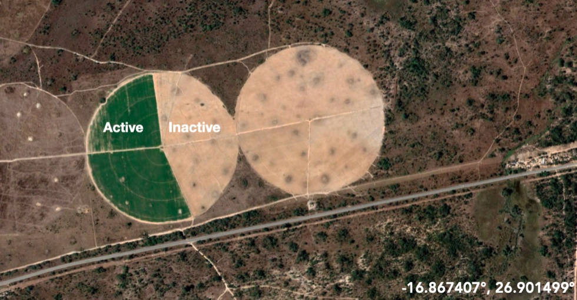

Update 1
Contents
Update 1¶
Project: Combining computer vision and satellite imagery to map agricultural investment and water use in Sub-Saharan Africa
Motivation & Background¶
Irrigated agriculture is expanding rapidly across southern Africa. Because this expansion is occurring without much regulation or monitoring, it’s not exactly clear where and when expansion is happening, or the fate of expanded agriculture. In most expansionary cycles, there is a boom-and-bust dynamic, where many investments fail quickly and only a few persist. We’re interested in mapping these dynamics over the past 5-10 years across southern Africa and monitoring them going forward.
Project goals¶
In order to track this on-going agricultural gold rush, we need to be able to resolve individual fields as objects. This means that instead of simply identifying pixels containing agriculture using pixel-wise classification, or finding all the areas containing agriculture using semantic segmentation, we want to segment individual fields within an image using instance segmentation.
In addition, we want to know if fields are actively being used or not. This means we need to generate distinct labels for active and inactive center pivots.
Our project will set up the necessary infrastructure, generate appropriate label data, and disseminate/use that data for training cutting-edge computer vision models that can be used to monitor and map agricultural expansion and irrigated water use across southern Africa (and elsewhere!).
Our data¶
We plan to use the labeling interface that we will implement to generate datasets of irrigated farmland in Zambia.
The raw data will be downloaded from Planet Labs, an Earth satellite imaging platform. It will take the form of satellite images of farmland, both with and without central pivots.
The planned dataset will consist of labeled satellite images of central pivot irrigated farmland. To create this dataset, we will break up the images into smaller image chips, and then upload them to Label-Studio, a data annotation tool, to create the labels. One possible example of this data is below.

Since Planet Labs data started in 2019, the data ranges from 2019 to present. We also want to avoid rainy seasons in our data, since rainy seasons include more clouds and therefore less visuals of the ground. Therefore, data will be selected in each area’s dry season. For example, June to September in southern Africa.
Current work¶
We are currently working on setting up an image annotator web service. The data that we have is currently unlabeled. We want to be able to identify center-pivot irrigated farms. Therefore, we need data that has these center-pivots clearly annotated. Originally, we wanted to implement the CoCo Annotator tool along with datatorch, but we realized that neither were being updated. We decided to set up an instance of Label Studio on an ERI server. Label Studio will enable us to efficiently label the image data. The service instance should have a port exposed to allow connecting to it externally. We will then work on annotating our data.
Note
Center-pivot irrigation This is an effective method of crop irrigation in which crops are watered by a circular pattern around a central pivot point.
See center-pivot irrigation in action!